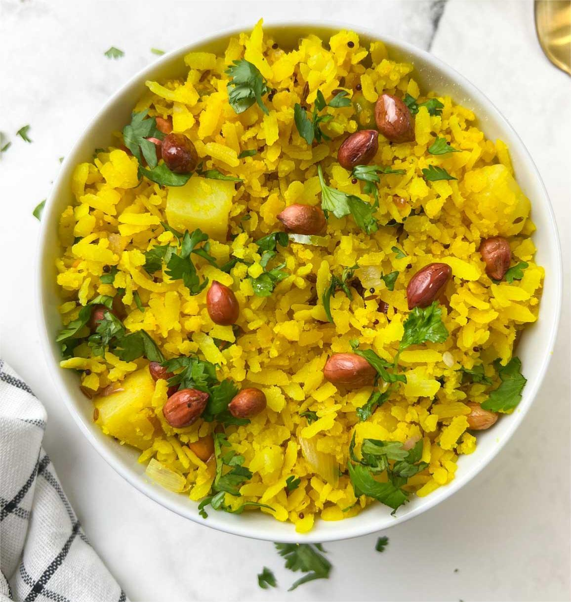
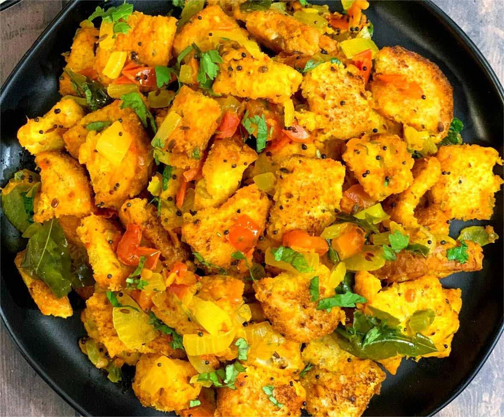
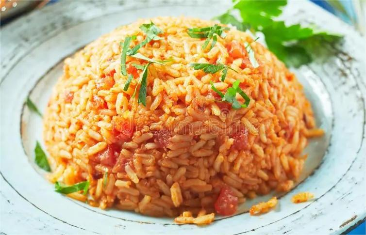
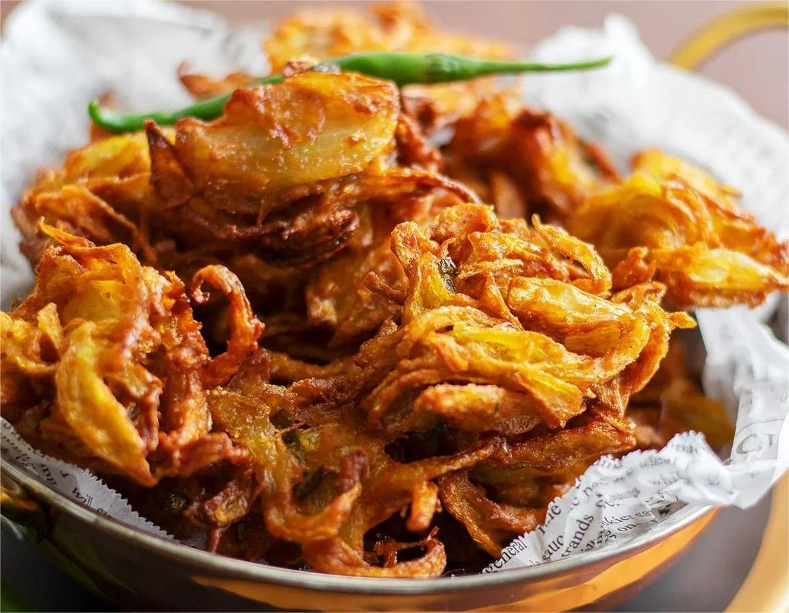
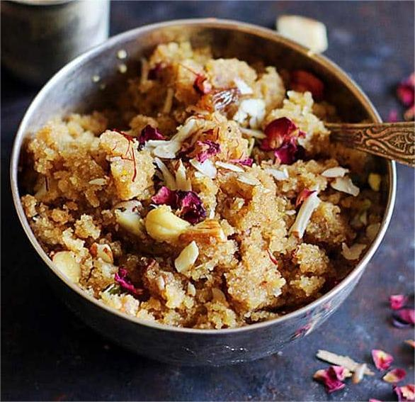
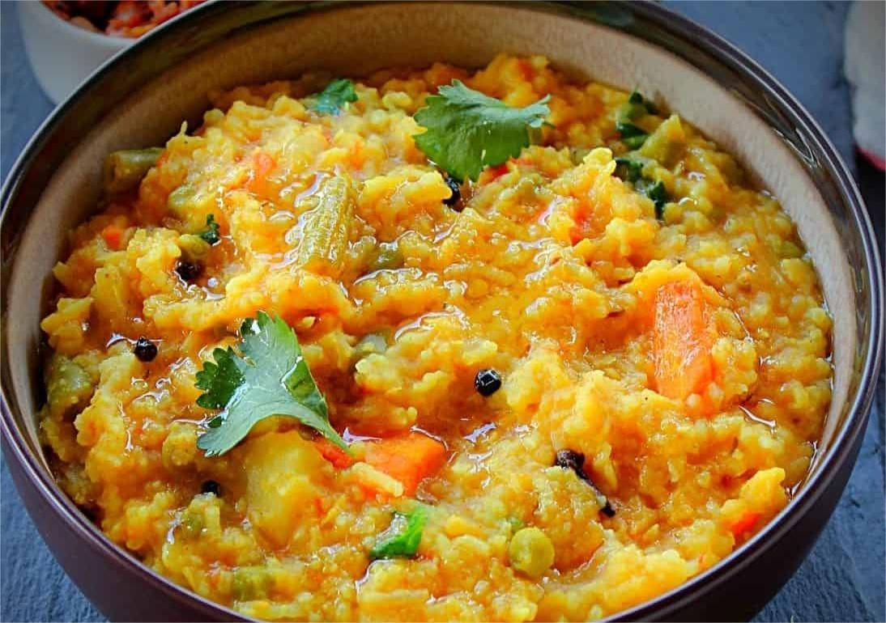

Lemon Poha
Light, tangy, and extremely budget-friendly.
Benefit: Easy digestion, quick energy.
Ingredients
- 1 cup poha
- 1 lemon
- 1 onion
- Oil, salt
Method
- Wash poha gently in water and drain completely.
- Heat oil in a pan and sauté chopped onion until soft.
- Add salt and turmeric (optional) and mix.
- Add poha and gently mix on low flame.
- Turn off heat, add lemon juice, mix well.
- Serve hot with peanuts or curry leaves.

Bread Upma
Perfect use of leftover bread.
Benefit: Zero waste, filling meal.
Ingredients
- 4 bread slices
- 1 onion
- Oil & spices
Method
- Cut bread slices into small pieces.
- Heat oil in a pan and sauté onions.
- Add spices like chili powder and salt.
- Add bread pieces and mix well.
- Cook for 3–4 minutes on low flame.
- Serve hot with chutney.

Tomato Garlic Rice
Spicy, tangy one-pot dish.
Benefit: Cheap, tasty, long-lasting energy.
Ingredients
- 1 cup rice
- 2 tomatoes
- Garlic & spices
Method
- Heat oil and sauté garlic until aromatic.
- Add chopped tomatoes and cook till soft.
- Add spices and salt.
- Add washed rice and water.
- Cook till rice is fluffy.
- Serve hot with curd.

Onion Pakoda
Crispy street-style snack on a budget.
Benefit: Affordable comfort food, perfect evening snack.
Ingredients
- 2 onions (sliced)
- 1 cup gram flour
- Salt & spices
- Oil for frying
Method
- Mix onions with gram flour, salt, and spices.
- Add little water to form thick batter.
- Heat oil in deep pan.
- Drop small portions into hot oil.
- Fry till golden and crispy.
- Serve hot with chutney.

Suji Halwa
Classic budget-friendly Indian sweet.
Benefit: Instant energy and minimal ingredients.
Ingredients
- ½ cup suji
- ¼ cup sugar
- Ghee & water
Method
- Heat ghee and roast suji till aromatic.
- Slowly add water and stir continuously.
- Cook till thickened.
- Add sugar and mix well.
- Cook till glossy.
- Serve warm.

Vegetable Khichdi
Comfort food on a budget.
Benefit: Complete nutrition, easy digestion.
Ingredients
- ½ cup rice
- ½ cup dal
- Vegetables
Method
- Wash rice and dal thoroughly.
- Add vegetables, water, salt, and turmeric.
- Pressure cook for 3 whistles.
- Let pressure release naturally.
- Mix well and serve hot.